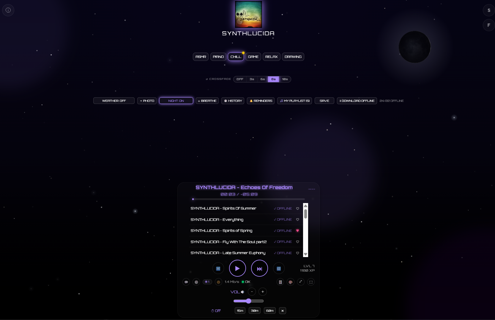

SYNTHLUCIDA
Official Rompler Download
Shape Your Own Atmosphere
Welcome to the download hub. This custom rompler was crafted with the same passion that goes into every SYNTHLUCIDA track. It plays back a library of nature recordings and a handful of technical sounds, letting you tweak their basic sound parameters to shape your own deep, cinematic soundscapes — perfect for Chillout, Ambient, and Progressive electronic music.

Available Now - Free For ALL
PURE SOUNDSCAPES V1.0 VST/AU
Format: VST2 / AudioUnit / Standalone
Size: ~410MB zip
Compatibility: Windows
⬇ DOWNLOAD ROMPLER
Size: ~410MB zip
Compatibility: Windows
New - Free Desktop App
SYNTHLUCIDA PLAYER - Windows App
A native Windows build of the Relax Player, so your ASMR, PIANO and CHILL streaming lives in its own window instead of a browser tab. Themes, MY PLAYLIST, offline downloads and XP progress all carry over exactly as you left them.

Format: .exe installer
Compatibility: Windows 10/11
Requires an internet connection for streaming
⬇ DOWNLOAD PLAYER
Compatibility: Windows 10/11
Requires an internet connection for streaming